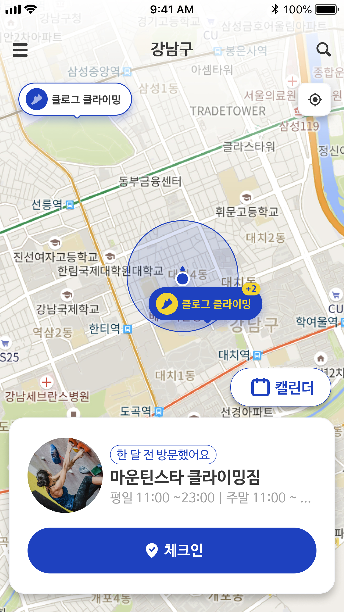

Step 05 · 기능 구현
결정이 구현된 3가지 핵심 기능
Research Question 검증과 이터레이션에서 도출한 설계를, 3가지 핵심 기능으로 구현했다
체크인 (기록 시작)
→
클라이밍장 정보 (탐색)
→
캘린더 (성장 확인)
FEATURE 01
Easy Access
체크인 — 기록의 시작
RQ1 → 기록 시작 비용을 0으로

탭 한 번 → 위치·날짜·시간 자동 저장
내 위치 기반으로 주변 클라이밍장 자동 탐지
탭 한 번으로 체크인 — 기록이 바로 시작
방문 이력이 캘린더에 자동 누적
FEATURE 02
Clarity Information
클라이밍장 정보 — 가기 전에 확인
RQ2 → 의사결정에 필요한 정보 제공

운영 시간 · 난이도 · 위치 · 리뷰 한 화면에
운영 시간·난이도·위치를 한 화면에서 확인
검색으로 원하는 암장 빠르게 탐색
다녀온 후 리뷰로 커뮤니티 정보 공유
FEATURE 03 · CORE
Calendar Growth
성장 캘린더 — 기록이 쌓이면 보인다
RQ3 → 기록이 쌓여 성장이 보인다
8명 중 7명 — "얼마나 늘었는지 모르겠다"

방문·루트·컨디션이 날짜별로 쌓인다
방문·루트·컨디션·부상이 날짜별로 누적
월별 캘린더로 나의 클라이밍 패턴 한눈에
배지 시스템으로 꾸준함을 시각적으로 확인